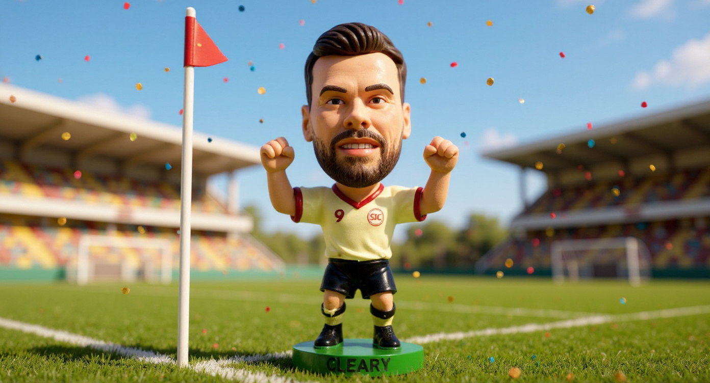
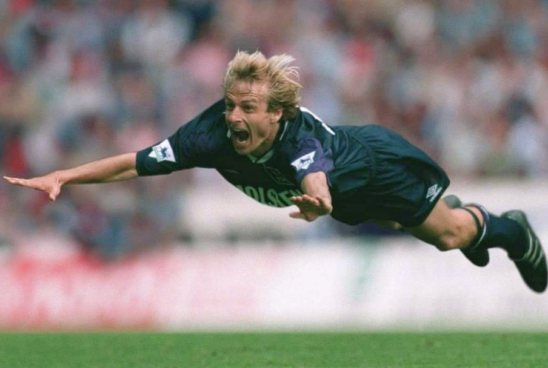
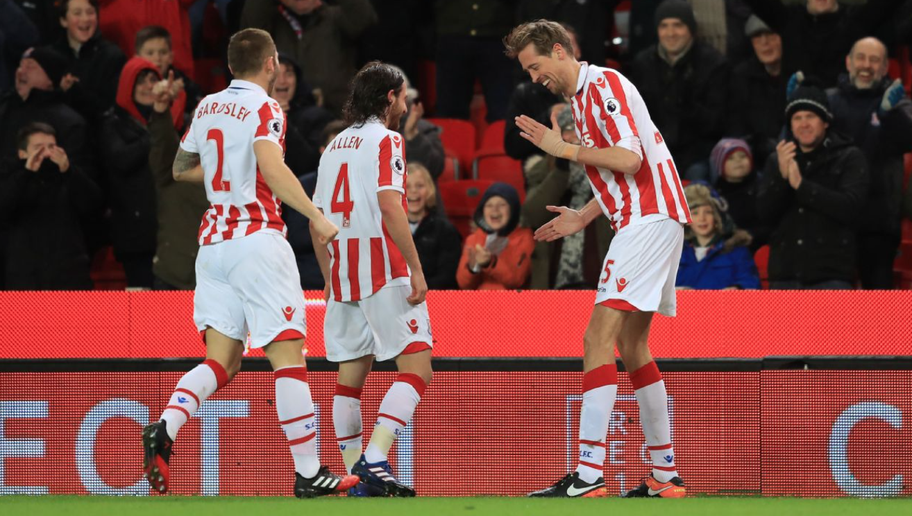

The Premier League season starts this weekend. Cole Palmer will want to have a better season and score early. I hope he doesn't, but if he does, he'll pull the cold face. Hands up, fingers splayed, expression blank. And the crowd will go wild for an asset he didn't even invent.
Jenni Romaniuk's work in Building Distinctive Brand Assets lays the foundation. An asset isn't special because it's creative or clever. It's special because it's been consistently linked to one brand in memory, to the point where seeing it triggers the brand without any other cue. A gesture. A colour. A sound. A shape. The asset does the work so the rest of the communication doesn't have to.
Just a bit of fun, but football celebrations offer some learnings about this. Here are six Premier League player celebrations that illustrate the principles.
Palmer v Rogers — Ownership beats invention
Morgan Rogers did the cold face first. Cole Palmer owns it. He's even trademarked it. The trademark is remarkable because it makes explicit what brand building is really doing anyway, staking a claim on a signal in the minds of an audience.
Rogers has a legitimate claim on being first. Palmer has the asset. Those are two different things, and the gap between them is built from repetition, from cultural timing, and from a breakout season that put Palmer in front of millions of people at exactly the right moment. Distinctiveness is not about originating something. It's about building the link until no one else can credibly make the same claim.
Klinsmann — Fame

Jürgen Klinsmann's diving celebration at Tottenham in 1994 was one of the great pieces of footballing self-awareness. He'd been accused of diving. So when he scored his first goal, he threw himself to the ground in an exaggerated dive and grinned at the crowd. His teammates piled on. The crowd loved it.
It became famous. Widely replicated. Teammates did it with him. Other players did it in other games. Pundits referenced it for years.
That is the fame dimension of a distinctive asset. Klinsmann's celebration crossed out of football and into broader culture. People who barely followed the Premier League knew it. That kind of reach is what builds mental availability, the sort that doesn't require the audience to already be interested in you.
Crouch — Uniqueness

Peter Crouch scored his first England goal against Hungary in 2006 and celebrated by doing the robot. A six-foot-seven centre forward, arms stiff, moving like a malfunctioning vending machine, in front of 50,000 people at Old Trafford. It was completely his own, completely committed, and completely bizarre.
The robot became a shorthand for Crouch himself well beyond football. The Peter Crouch Podcast uses an image of it. So did the Amazon Prime documentary, That Peter Crouch Film. Show someone a still of the celebration and there's no ambiguity. That's the uniqueness dimension. No one else has done it, or could do it without it being an imitation. It belongs to him in a way that is almost impossible to dilute.
Uniqueness means you cannot be confused with anyone else. Most brands underestimate how much distinctiveness they're giving away to competitors by being too similar.
Ronaldo — The sweet spot
The SIUU is famous and unique. That is the combination you are building toward.
Ronaldo scores. He jumps. He spins. He lands with his arms out and screams SIUU at the top of his lungs. He has done this hundreds of times, in the same way, without variation. And the crowd now does it before he does. Stadiums around the world perform the asset on his behalf, which is the highest expression of what a distinctive asset can achieve.
He got there through repetition. The consistency is not boring to the audience. It's the thing they come for.
Sturridge — Throwing shapes
Daniel Sturridge's celebration was a sequence of loose, fluid arm movements that looked improvised every time but were completely his. Throwing shapes in the most literal sense. The problem is, most people who try to recreate it cannot. It looks simple and it isn't. There's a specific rhythm to it that is just bizarre enough to be unmistakable and just complex enough to resist imitation.
Brands often edit out the strange or awkward in pursuit of professionalism. What Sturridge's celebration shows is that the distinctive thing and the strange thing are frequently the same thing. The shapes were not elegant. They were entirely him. Sometimes go for the fun and bizarre.
Lewis-Skelly — Don't borrow a rival's signal
Myles Lewis-Skelly scored against Manchester City in February 2025 and celebrated by sitting cross-legged on the pitch in a meditation pose. Haaland's pose. The one Haaland does after almost every City goal, the one that's become one of the most recognisable goal celebrations in the world.
The intent was probably humorous. A bit of needle against the opposition. But the effect is to spend your moment building someone else's asset. Everyone watching associated the image with Haaland. Lewis-Skelly handed City a free piece of brand reinforcement in a match Arsenal won.
This happens in marketing constantly. A brand borrows a competitor's codes because those codes are culturally famous and feel like a shortcut to relevance. The shortcut leads straight to the competition's memory structures.
The framework from Romaniuk's research comes back to two dimensions: how unique is the asset, and how famous is it. Klinsmann sits high on fame. Crouch sits high on uniqueness. Ronaldo is the rare case that scores on both. Palmer is building toward that space right now, one cold face at a time.
At The National Lottery we built and grew various DBAs. I spoke about it at the global ESOMAR conference a few years ago.

The Premier League season kicks off this weekend. I'm hoping we see plenty of Liverpool celebrations.